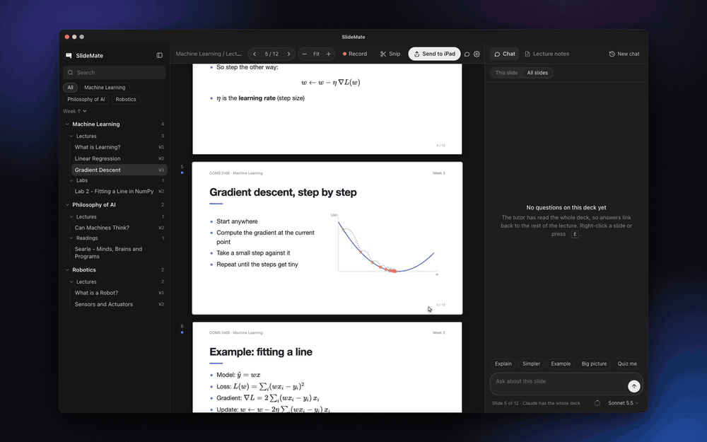
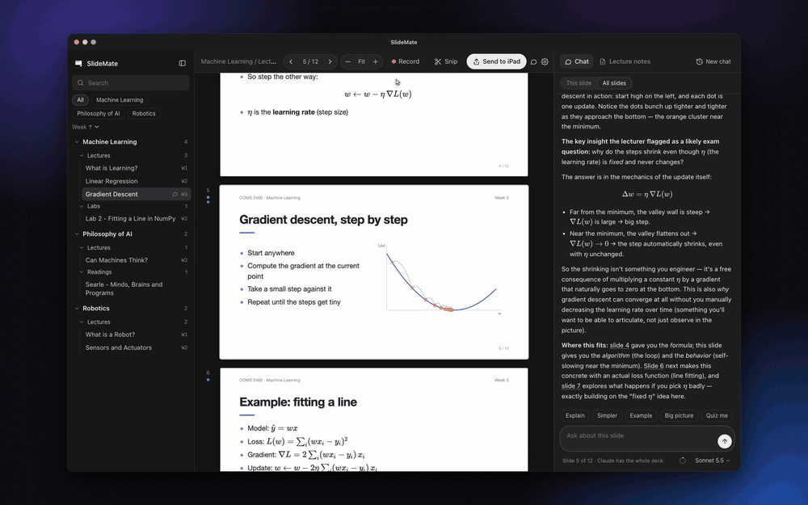
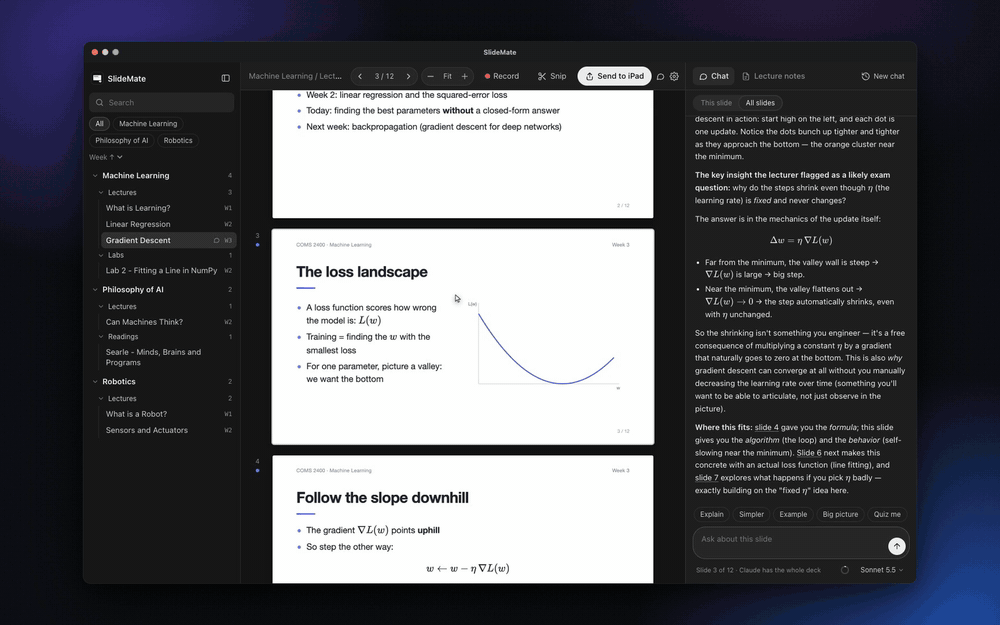
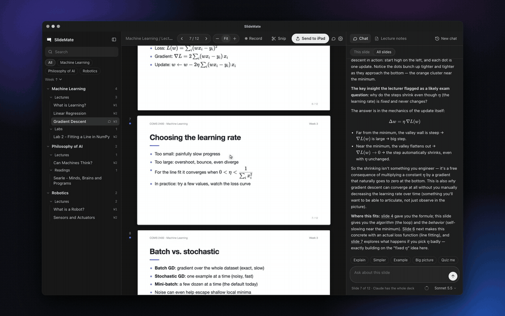

SlideMate is a free, open-source Mac app for studying lecture PDFs. Right-click any slide to have it explained in context, send slides to your iPad in one click, and turn lecture recordings into notes for every slide.
Free · MIT licensed · macOS 13+ · Works with your Claude or ChatGPT account, no API key

Three bullet points and a diagram. The explanation was in the lecture, and you weren't writing fast enough.
Pasting slides into ChatGPT one at a time means it doesn't know what came before, and asking about "page 23 of the PDF" is clumsy.
Screenshot, find it, AirDrop it, import it into GoodNotes. Every single time.
Right-click a slide and choose Explain this slide, or ask your own question. The tutor has read every slide in the PDF, plus what your lecturer said if you recorded the lecture. It tells you how the slide connects to the rest of the course.
Snip any part of a slide (a diagram, an equation, a table) and click Send to iPad. It goes by AirDrop, with your iPad picked automatically, and is copied to the clipboard, ready to paste into GoodNotes or Notability. No screenshots, no Files app.

Press Record in class. SlideMate transcribes the lecture on your Mac with NVIDIA Parakeet and keeps track of which slide was showing. Then it writes:

⌘F searches the text of every slide. Pinch to zoom in on a diagram, anchored where you point. Select and copy text straight from the slides.
Point SlideMate at your uni folder. It sorts every PDF by course, then lectures, labs and readings, then week, without moving a file. Connect Blackboard or Canvas through MCP, and a Pull button downloads new slides.

| SlideMate | ChatGPT / Claude chat | NotebookLM-style tools | |
|---|---|---|---|
| Knows the whole deck | Yes, every slide | Only what you paste | Yes |
| Knows which slide you're on | Yes | No | No: you chat with the whole source |
| Uses what the lecturer said | Yes, from your recording | No | If you upload a transcript |
| Slide → iPad in one click | Yes (AirDrop + clipboard) | No | No |
| Chats saved per slide | Yes | One long chat | One notebook chat |
| Where it runs | On your Mac (open source) | Web | Web |
| Cost | Free; uses your existing Claude or ChatGPT plan | Your plan | Varies |
Download the latest release, unzip it and drag SlideMate into Applications. Or build it from source:
git clone https://github.com/Mattlo0546/slidemate.git && cd slidemate && scripts/install.shYou'll need Claude Code or Codex signed in with your account. The setup screen checks this for you.
Open the lecture PDF in SlideMate, right-click a slide and choose Explain this slide. The AI tutor has read every slide in the deck (and your lecture notes, if you recorded the lecture). It explains how that slide connects to what came before and after, and links to the slides it mentions.
Pasting slides one at a time loses the context of the rest of the lecture, and asking about a specific page of a long PDF is awkward. SlideMate keeps the whole deck in context, knows which slide you're looking at, and saves the chat for each slide so it's still there when you revise.
Click Send to iPad, or snip any area of a slide and choose Send to iPad. It goes by AirDrop (SlideMate can select your iPad automatically) and is also copied to the clipboard, so you can paste it into GoodNotes or Notability with Universal Clipboard.
Yes. Press Record during the lecture. SlideMate transcribes it on your Mac with NVIDIA Parakeet, tracks which slide was showing, and writes a summary (key ideas, to-dos, deadlines, exam tips) plus notes for each slide with the lecturer's exact words. You can also import a transcript from Otter or Granola.
Yes. SlideMate is free and open source under the MIT license. It uses the Claude (Claude Code) or ChatGPT (Codex) account you already have, so there's no API key and no extra subscription.
SlideMate is built for lecture slides specifically. It's a slide viewer first: the tutor answers about the slide in front of you with the whole deck as context. It adds Mac features like AirDrop to iPad and on-device lecture transcription, runs locally, and is open source.
Not yet. SlideMate runs on macOS 13 or later, on Apple Silicon and Intel Macs. It sends slides to an iPad, but the app itself runs on the Mac.
Your files stay where they are on your Mac, and lecture audio is transcribed on-device. The only thing sent anywhere is your question, with the slide deck, to the AI provider you chose (Anthropic or OpenAI).